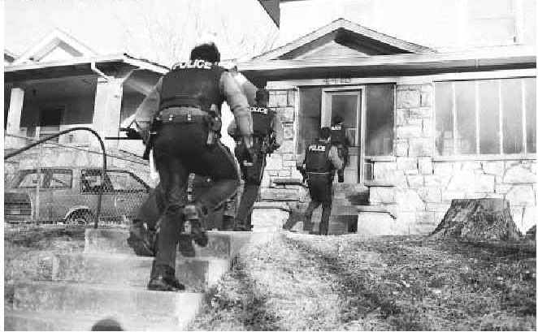

<<< Previous
Next >>>

A discovers, as he supposes, plain circumstantial evidence of a crime, and informs the police where A-8, the criminal, can be found * A-8, arrested as a criminal on information furnished by A, easily proves that no crime has been committed **